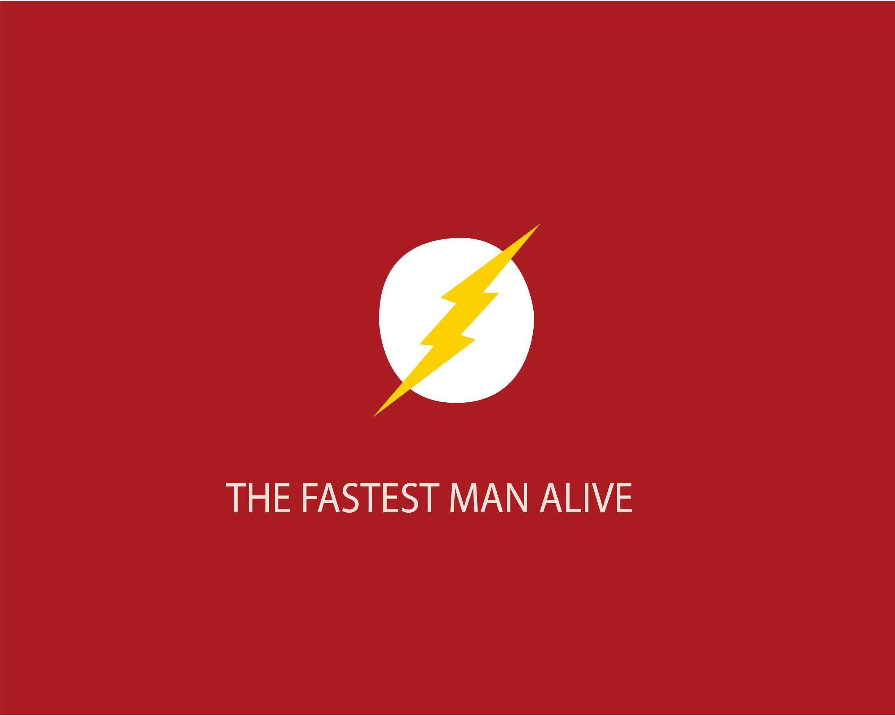

ADOBE ILLUSTRATOR
O Adobe Illustrator, ou como é conhecido AI, é considerado como o melhor programa de criação vetorial. Usado na oficina para elaboração de desenhos usando formas geométricas, criação de logomarcas criando uma identidade visual e também vetorização de bitmaps.


ADOBE PHOTOSHOP
O Adobe Photoshop, ou como é conhecido PS, é um software criado para editar imagens bitmap, e criação de animações em GIF para web.